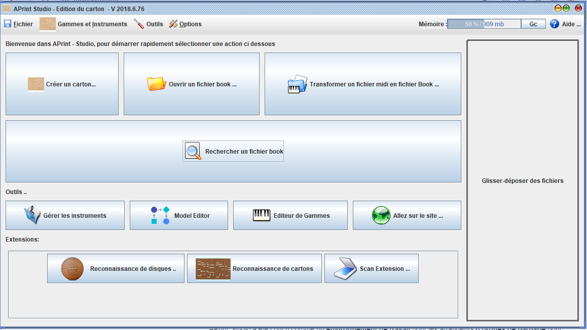

Bienvenue dans l'aide en ligne du programme APrint Studio

APrint / Studio
APrint Studio a été conçu comme un environnement de travail pour les arrangeurs d'orgues de barbarie pour faciliter la création et la préservation de morceaux de musique. Le logiciel permet également la création de nouvelles oeuvres, et propose une validation numérique de la notation musicale vis à vis des capacités des instruments de musique mécanique.
Une attention toute particulière est donnée à la simplicité d'utilisation (grand public / amateur / professionnel).
La perfection est atteinte, non pas lorsqu'il n'y a plus rien à ajouter, mais lorsqu'il n'y a plus rien à retirer. - Antoine de Saint-Exupéry.
APrint Studio est réalisé en tant que logiciel Libre, permettant aux utilisateurs d'adapter le programme en fonction de leurs besoins. Le code source du programme est accessible dans chaque installation, dans le fichier .jar (archive ZIP). APrint Studio utilise des standard ouverts pour les fichiers (fichiers textes, fichier zip, fichiers wav), pour garantir la lisibilité des données avec n'importe quel logiciel complémentaire.
APrint Studio est extensible. Des scripts et Un mécanisme d'extension permettent de brancher de nouvelles fonctionnalités dans le logiciel sans avoir à connaître les détails du fonctionnement interne. Ce qui prenait les jours, prend maintenant des minutes.
Principales Fonctionnalités offertes
- Définition d'instrument, et impression de gammes, de patrons de cartons (incluant la définition sonore)
- Import de fichiers midi, et vérification des contraintes associées à l'instrument
- Numérisation de cartons à partir de divers systèmes d'acquisition, reconnaissance I.A. des trous
- Perforation de carton, en utilisant des machines CNC, (GRBL), poinçonnage et Lazer
- Export de video, fichier Wav, Ogg des créations
- Création de PDF, impression de poncifs
- Création de fichier DXF/SVG de cartons, pianorolls, patron de rouleaux de boites à musique
- Support des instruments type Artiston avec des Disques cartons ou métal
- Support des boites à musiques à rouleaux ou cylindres
- Atelier de transformation / transposition d'un instrument à un autre (Model editor)
Concepts
APrint Studio utilise des fichiers Book, pouvant être directement créé à partir de fichier MIDI. Ce type de fichier préserve l'ensemble des spécificités des instruments simples ou complexes (registres, commandes diverses). Des scan de cartons à partir de Video, Machine spéciales, ou Scanner peuvent également être sauvegardés au format BookImage (Version 2020)
L'utilisation des sons réels d'instruments influe également de façon importante sur la composition ou l'arrangement de morceaux spécifiquement écrits pour les orgues de barbarie.
Nous espérons pouvoir offrir les fonctionnalités nécessaires aux arrangeurs / amateurs pour exploiter au mieux toutes les capacités des orgues de barbarie et éventuellement déclencher des vocations pour faire vivre ces instruments merveilleux.
Utilisation
APrint Studio a été testée et est utilisé sur les OS suivants (Windows XP/Vista/8/10, Linux, Mac).
Les liens Barrel Organ Discovery
Site Web - Toutes les ressources sont accessibles de cette page
- http://www.barrel-organ-discovery.org
Qui Sommes nous, que faisons nous, pourquoi ?
- http://www.barrel-organ-discovery.org/site/about.html
Lien directe vers la page du logiciel APrint Studio :
- http://www.barrel-organ-discovery.org/site/download.html
Tous les instruments publiques :
- http://www.barrel-organ-discovery.org/instruments/
Tous les travaux sur les perfos CNC :
- http://www.barrel-organ-discovery.org/site/krunch.html
Contribuer sur les logiciels, documentations
----------------------------------------------------------
L'ensemble des éléments et logiciels sont disponibles sur la plateforme Github.com, cette plateforme permet d'améliorer les logiciels, faire des nouveaux logiciels à partir des éléments
https://github.com/barrelorgandiscovery
On y retrouve :
- Le site web (pages)
- la documentation (pages)
- le projet APrint Studio et toutes ses fonctionnalités (numerisation, perçage, modification ... )
- MidiSaver (projet arduino, de numerisation de cartons)
- GRBL Punch (pilotage commande numerique, pour perfo)